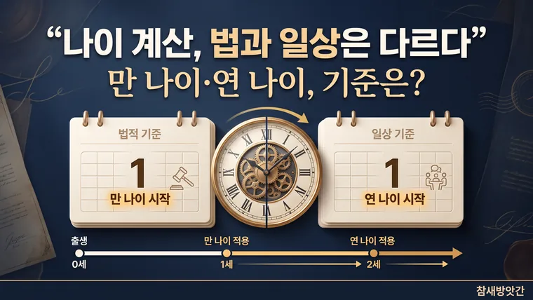

헷갈리는 만나이 계산법, 법적 기준과 일상 적용의 차이 완벽 정리
만 나이는 태어난 날을 0살로 시작해 생일마다 한 살씩 늘어납니다. 올해 생일이 지났는지에 따라 값이 달라지고, 취학·술·담배·병역판정검사 같은 일부 분야는 지금도 연 나이를 씁니다.

만나이가 도입되어도 왜 여전히 헷갈릴까?
우리는 일상에서 나이를 물어볼 때 세는나이, 연나이, 만나이를 혼용해 왔습니다. 하지만 2023년 6월부터 행정·민사에서 쓰는 나이가 '만나이'로 통일되면서 일상 속 혼란이 더욱 가중되었죠. 친구를 만났거나 서류를 작성할 때 "내가 올해 몇 살이었지?" 하며 멈칫했던 경험, 누구나 한 번쯤 있으실 겁니다.
내가 직접 겪어보니, 단순히 생년월일을 머릿속으로 빼는 것만으로는 헷갈리기 쉽습니다. 특히 생일이 지나지 않은 사람과 지난 사람의 나이가 꼬이면서 계산 실수가 잦아지더군요. 오늘은 일상에서 가장 많이 헷갈리는 만나이의 정확한 계산 원리와 법적 기준을 명확하게 짚어보겠습니다.
만나이 계산의 기본 원리와 공식
만나이는 태어난 일을 0살로 시작하여, 365일이 지나 생일이 돌아올 때마다 1살씩 더해가는 방식입니다. 글로벌 스탠다드에 맞춘 방식이지만, 한국인에게는 생일 전후로 나이가 바뀌는 개념이 다소 낯설게 느껴질 수 있습니다.
계산하는 방법은 생각보다 간단하지만 단계별로 확인하는 것이 안전합니다.
- 올해 연도에서 태어난 연도를 뺍니다.
- 생일이 지났다면(생일 당일 포함) 1번의 결과값을 그대로 유지합니다.
- 생일이 지나지 않았다면 1번의 결과값에서 1을 뺍니다.
예를 들어, 5월생인 사람이 3월에 나이를 물어볼 때 아직 올해 생일이 오지 않았기 때문에, 연도 계산값에서 1을 빼야 맞는 나이가 됩니다. 이 미세한 차이 때문에 연초에는 나이 계산 실수가 집중됩니다.
일상과 법 적용에서 주의해야 할 예외 및 한계
만 나이 통일법이 시행되었지만, 모든 곳에 무조건 만나이만 적용되는 것은 아닙니다. 일상생활이나 정책에 따라 예외 조항이 존재하므로 주의해야 합니다.
- 취학 아동 기준: 초등학교 입학 연령은 만나이와 상관없이 전년도에 만 6세가 된 아동(예: 2026년 기준 2019년생)이 입학하는 연나이 기준을 유지합니다.
- 병역 및 주류·담배 구입: 청소년보호법상 술·담배 구입 가능 연령과 병역판정검사 대상 연령은 연나이(현재 연도 - 출생 연도)를 기준으로 판정합니다.
- 따라서 서류나 계약을 다룰 때는 해당 기관의 기준이 '만나이'인지 '연나이'인지 반드시 사전에 확인하는 것이 현명합니다.
날짜 계산기를 활용해 실수를 줄이는 팁
머릿속으로 계산하다 보면 윤년이나 월별 일수 차이 때문에 헷갈리기 십상입니다. 이럴 때는 스마트폰이나 웹에서 제공하는 자동 날짜 계산기를 활용하는 것이 가장 정확합니다.
생년월일만 입력하면 만 나이, 연 나이, 세는 나이를 한 번에 보여주기 때문에 서류 작성 시 실수를 크게 줄일 수 있습니다. 띠와 별자리까지 함께 보고 싶다면 생년월일 계산기를 이용하면 됩니다. 처음에는 유틸리티 도구를 쓰는 게 어색할 수 있지만, 정확한 행정 업무를 위해 적극 활용하는 것을 추천합니다.
· 만나이는 태어난 일을 0살로 시작해 생일마다 1살씩 증가하는 방식입니다.
· 올해 생일이 지났는지 여부에 따라 계산 결과가 달라지므로 주의해야 합니다.
· 취학 연령이나 병역판정검사 등 일부 분야는 여전히 연나이 기준을 따르므로 확인이 필요합니다.
이 글의 기준과 예시는 2026년 10월 기준입니다. 법령이나 제도가 바뀌면 내용이 달라질 수 있으니, 신고·계약·서류 제출 전에는 해당 기관에서 최신 기준을 확인하세요. 계산 결과는 참고용입니다.
🔮 다음 글 예고
다음 글에서는 생년월일 하나로 나이·띠·별자리를 한 번에 계산하는 원리를 알아봅니다.
💬 함께 나누는 질문
일상 속에서 만나이 계산 때문에 헷갈렸던 적이 있으신가요? 여러분이 쓰는 계산 방법이 있다면 어떤 것인지 궁금합니다.